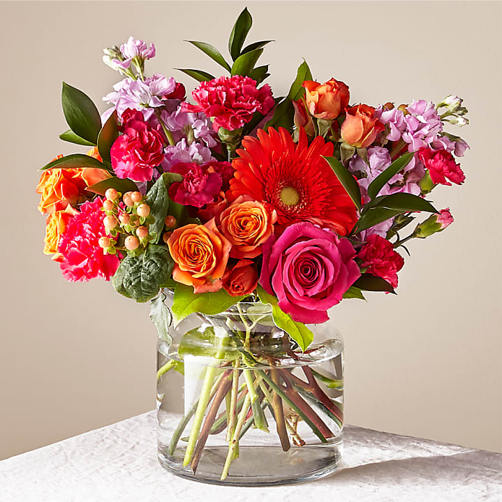
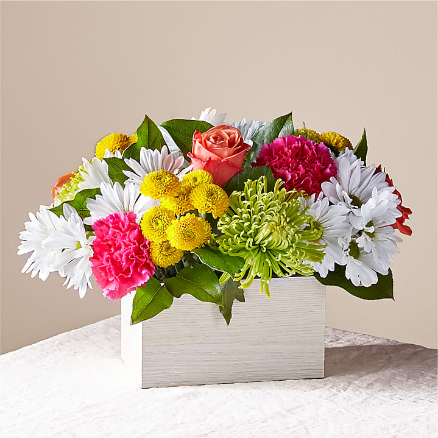

Get Well Soon Flowers
When a loved one is sick or just had surgery, it’s important that you let them know you’re there for them. One of the best ways you can show that you care is by sending flowers. Get well flowers will brighten up anyone’s day, especially if they’re feeling under the weather. With Proflowers, you can have a get well soon bouquet delivered right to your loved one’s doorstep to cheer them up when they’re feeling down. Everyone appreciates a little pick-me-up when they’re sick, and get well soon flowers will do just that!
Get Well Flowers FAQs
When should I send someone get well flowers?
Get well flowers are an appropriate gift whenever someone you love is feeling under the weather. You should send get well flowers when someone you know is sick, recently had surgery, suffered an injury, or is just feeling down in general. A beautiful get well bouquet will boost their mood in no time. When you’re sick, it’s nice to know someone thinks of you and wishes you the best. It can help the healing process.
What are some of the most popular get well bouquets?
We offer a wide range of get well bouquets fit for every preference. We have plenty of popular get well bouquets that feature many different flowers, such as sunflowers, tulips, and peace lilies. Just make sure you take into consideration the recipient's personal preferences when choosing the flowers. As a general rule, you can never go wrong with roses. Traditionally, yellow roses are sent as get well soon blooms, but the most crucial factor is brightness. Bright, colorful blooms light up the room and make a person feel better just looking at them.
Can I deliver get well soon flowers to a hospital?
With Proflowers, you can have your get well flower delivery sent right to a hospital in your recipient’s area. A beautiful bouquet of flowers can brighten up even the dullest of hospital rooms. Regardless of where you send your get well flowers delivery to, you can rest easy knowing it will be delivered with care.
What flowers do you give to someone in the hospital?
If sending flowers directly to a patient in the hospital, choose those with a slight scent if they are sharing the room or a staff member is allergic. Suitable choices include lilies, hydrangeas, daffodils, and orchids. Because space in hospital rooms is limited, pick a compact arrangement.
Note that patients in the Intensive Care Unit (ICU) cannot receive flowers. Once they are in a regular hospital room, sending a get well soon flowers delivery is fine. After what they’ve been through, they will really appreciate your thoughtfulness and the loveliness of the flowers.
Along with a get well soon bouquet, what are other ways to send get well wishes?
There are many ways you can send well wishes in addition to a get well soon bouquet. You can send balloons with your bouquet that include a heartfelt message. You also can send get well baskets that come with baked goods and other delicious snacks. You can even send a gift basket for kids that comes with a cuddly teddy bear that’s bound to boost their spirits.
What are some get well soon gifts?
Along with get well soon flowers, Proflowers offers a large selection of get well soon gifts for delivery. Send a patient one of our choice sympathy plants to show support and care. A blooming azalea bonsai or juniper bonsai tree will lift their spirits while beautifying their surroundings. Receiving a white bliss orchid will make anyone feel better! Whether in the hospital or at home, a floral arrangement or bouquet brings cheer.

400000MMK
400000MMK

400000MMK
400000MMK

400000MMK
400000MMK
400000MMK

400000MMK
400000MMK